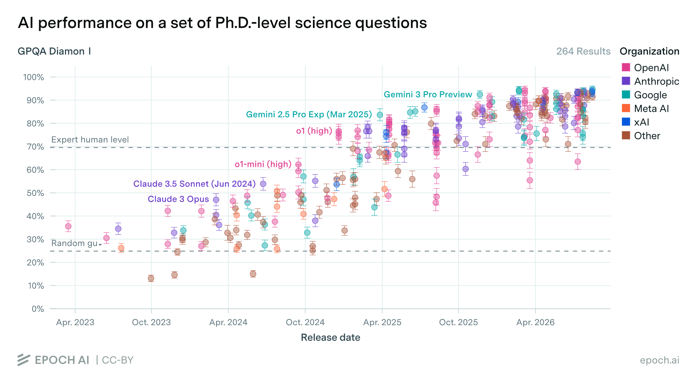
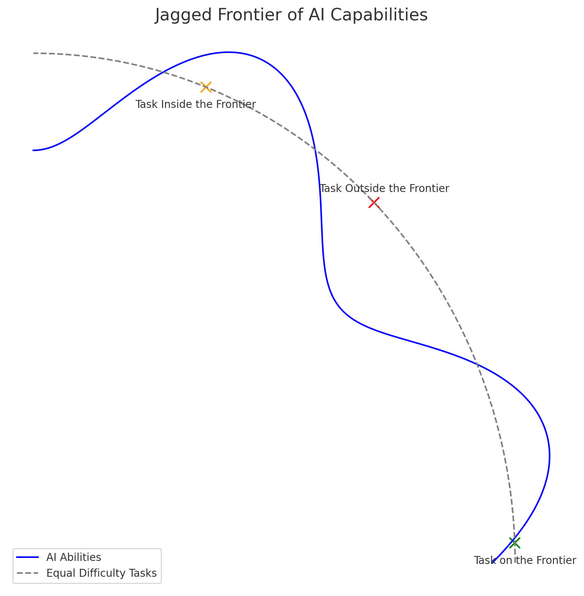
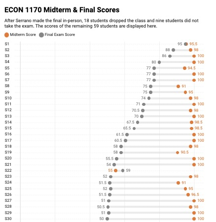
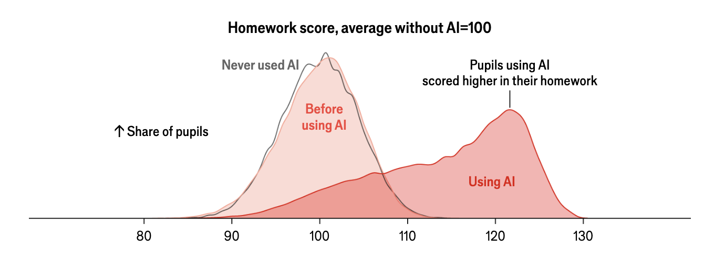
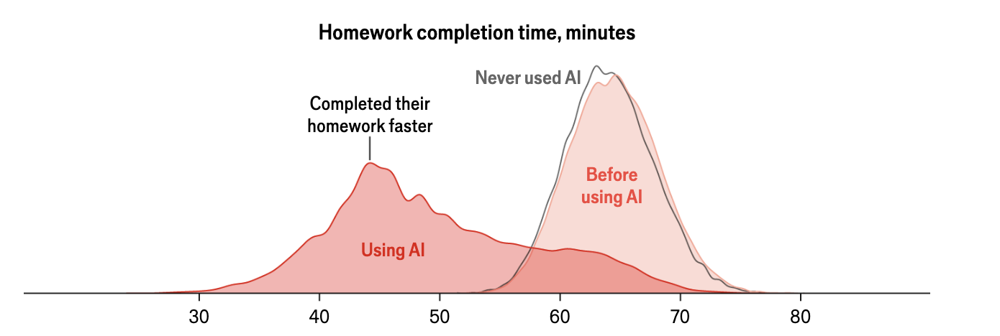
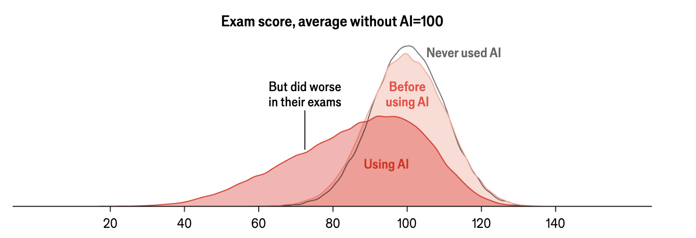

Practical AI for Academics
Session 1 — an introduction to Generative AI
Leibniz Institute for Financial Research SAFE
6 October 2026
Let’s start with an example – building a website for a paper
Three messages: AI is here, the workflow matters more than the model, and verification is key.
- The tools changed. Chat gave way to agents that read files, run code and iterate. The tool you tried in 2023 is not the tool of today.
- The workflow is the value. The agent’s leverage comes from context (your files), standing instructions, and reusable skills — not from raw model IQ.
- Judging the output is the new job. Silent errors and confident statements with no backing are what you should look out for.
Workshop synthesis, drawing on Mollick (2026), Velikov (2026) and Korinek (2025).
A brief example on developments since 2023
Eight steps now, hands-on later
Session 2. Hands-on with your own materials: a referee report on your draft, secure data, writing, the paper–code link.
Slides, skills and guides for both days: claesbackman.com/ai_workshop.
1 · An LLM predicts the next token
An LLM predicts the next token, over and over, very well
A token is a word or a piece of a word, about four characters of English. That is the whole training objective: given the text so far, predict the next token. Press the button.
So it is a prediction machine, not a lookup machine
It does not look facts up. It generates text that is plausible given what it has seen.
It predicts what an answer looks like. The arithmetic is right when the pattern is common, and the tools in section 4 exist because of this.
Or to the live web, unless the tool around it adds that. Out of the box it knows nothing about your paper.
An invented citation is a sequence of plausible tokens. “Smith and Jones (2019)” is very plausible.
A useful mental model
A very well-read, very fast colleague who has read almost everything but remembers none of it precisely, has no access to your files, will never admit to not knowing, and is unapologetic about being wrong.
The message in one sentence
Context improves AI tools tremendously, and the goal is to provide the right context.
Everything else today is a way of doing that, or of checking what came back.
2 · The landscape moved from chat to agents
Three generations in four years: chat, reasoning, agents
On PhD-level science questions, models went from guessing to above expert level

GPQA Diamond accuracy by model release date, 264 results; each dot is one model. Dashed lines: random guessing (25 percent) and expert human level (about 70 percent). Epoch AI, CC-BY.
Models differ

One paper in three hours, a thousand in a project
- Paul Novosad wrote a paper with AI in about three hours, then another one with the opposite result (Novosad 2026).
- Project APE has automated 1,000 policy-evaluation papers.
- Alejandro López-Lira built a system that finds a problem, generates a theory, verifies it adversarially and writes a publication-ready paper.
- Novy-Marx and Velikov (2026) describe how academic research could be automated with LLMs, and what that does to the literature.
Links to Project APE and López-Lira’s system are on the workshop resources page.
Agents raise econometric coding success from 74 to 96 percent
Galiani et al. (2026) benchmark applied econometric tasks in Stata, R and Python. Moving from a chatbot that writes one script to an agent that runs and revises its own code is what raises task success.
Under the chatbot, results differ a lot by software. Under the agent, the differences largely disappear.
74 → 96% task success, chatbot to constrained agent
8 cents extra cost per run
Galiani et al. (2026), NBER working paper 35588, abstract. “Constrained agent”: one that runs its code and fixes errors, but within a fixed set of tools.
But the frontier is jagged
Two tasks that look equally hard to you can sit on opposite sides of the line.
Drafting prose, summarising a literature, re-deriving a table: inside. Judging how to frame your paper, or noticing a wrong fixed effect: probably outside.
Consultants in Dell’Acqua et al.’s field experiment did better inside the frontier and worse outside it, because they trusted the tool in both places.
Dell’Acqua et al. (2026); Ethan Mollick’s “jagged frontier”.

Who has used ChatGPT or Claude inside an IDE or terminal? Who has used Claude Code or the Claude desktop app?
What share of economists in a survey of 1,260 social scientists use a coding agent?
Most social scientists use AI, few use an agent
Open dots: anyone using AI at all.
Four in five use some AI tool. One in five uses an agent. Economists are still under forty percent.
Most use chat only
The caveat that this was a really long time ago (February/March).
Lyttelton et al. (2026), survey of 1,260 social scientists, February–March 2026.
Adoption falls with seniority
About a quarter of PhD students use a coding agent. Fewer than one in ten full professors do.
Different readings: seniors have less to gain, seniors have RAs who use agents, or seniors face the highest switching cost.
Lyttelton et al. (2026).
Agent users do more of everything, especially drafting
Code is nearly universal among agent users.
More than half of agent users draft with it, fewer than a third of other users do.
Lyttelton et al. (2026).
3 · Use cases for AI
AI is going to change how we do research
Same research, done faster
Faster coding. Stata, R and Python drafts, debugging error logs, robustness checks, replication packages.
Better writing. Structured critique, edits in your own voice, pre-submission referee reports.
New outputs, new projects
New ways to communicate a paper. An interactive website, a policy brief, a dashboard or an audio summary, all from the same paper.
New kinds of projects. Mass automation (Project APE), automated replication and extension (Schwartz et al. 2026), AI agents as simulated humans (Expected Parrot), ???
Three jobs for an agent: feedback machine, talented RA, personal assistant
1 · Research
- Literature-review summaries
- Pre-submission referee reports
- Feedback on your own drafts
- Responses to referees
Mental model: a feedback machine.
2 · Coding
- Stata, R and Python scripts
- Debugging error logs
- Robustness checks
- Replication packages
Mental model: a talented RA.
3 · Practical and admin
- Update slides and materials
- Mock exams and problem sets
- Conference budgets, CVs
- Websites for a paper
Mental model: a personal assistant.
Admin is the undervalued one
Friction is highest. The cost of starting dominates the cost of doing.
The quality bar is lower. No referee, no audience: a funder checks the content, not the typesetting.
There is nobody else to delegate to. Small tasks are not worth giving to someone else.
Different funders, different required formats.
Without an agent. Reformat, re-order, drop sections, rewrite the bio.
With an agent. Drop the master CV and the funder’s template in the folder. The agent reformats, you check.
A task that is easy to verify and that nobody pays you for.
AI rewards expertise, because it does not supply the question
What the expert brings
Better questions. An expert asks the question that is worth asking.
Steering. An expert knows which follow-up moves the conversation where it should go.
Validation. An expert can tell when the output is wrong.
What the tool does not
It does not supply the question. It lowers the cost of asking one seriously.
It does not replace judgment. You decide what to do and whether it is worth doing.
It does not know your institution’s rules unless you put them in the context: the journal’s AI policy, the funder’s format.
Highly capable, confident on any question, and you are still in charge of the output.
Check-in: the website
4 · The agent is the harness around the model
The agent is a loop: prompt, model, tool, result, repeat
Your prompt goes to the model together with the context: CLAUDE.md, a file of standing instructions the agent reads every session, plus the folder listing and the conversation so far.
The model decides which tool to call. The harness runs it and puts the result back into the conversation. Repeat until the task is done, or the agent asks you a question.
Stylised trace of the website session. After Korinek (2025); figure adapted from Velikov (2026). All six tools are in the appendix.
Context is a budget
Everything the model conditions on has to fit in one window: the standing instructions, the tool definitions, the conversation, and every file it reads. Drag the slider to the right.
Four habits keep the window for what matters
Point at files
@filename
Name the file you mean; do not let the agent read everything in the folder.
One task, one session
/clear
Start a new session for a new task. Thirty turns or a shifted task: restart. Signs of drift.
Watch the meter
/context
Shows what is filling the window and by how much.
Convert once
/pdf-to-markdown
Long PDFs become markdown once, up front; the markdown is committed and pointed at from then on. Which formats need it.
The commands are Claude Code’s; Codex has equivalents. The starter CLAUDE.md template is in the appendix.
Five prompting rules: specific, iterate, correct early, verify, restart
5 · Choosing a tool
Providers trade places monthly; switching costs are low
The frontier labs
Claude, ChatGPT and Gemini have each led at some point in the last year. Grok (xAI) and Llama (Meta) compete. The leading provider changes with each release.
Open weights
Cheaper to run, and many are not far behind on performance. Mistral is European, which can matter when a data-protection office asks where the model runs.
Switching costs are low. It is more important to start.
Pro at $20 a month is enough to start
Free
$0
Casual chat on claude.ai; no real Claude Code usage
Pro
$20 / month
Light daily Claude Code use, projects, researchStart here
Max
$100–200 / month
Heavy Claude Code use (5× or 20× the Pro limits); the frontier model all day
API
pay per token
Automation, batching, custom-built tooling
Claude’s tiers as of August 2026; OpenAI’s are similar.
The default model is enough for daily work; step up for review
Fast, cheap
Haiku
Conversions, summaries, bulk tasks
Default
Sonnet
Daily coding, editing, drafting
Frontier
Opus
Hard reasoning, adversarial review
Most capable, slowest
Fable
Long-running agents, the hardest tasks; costs and waits more
Claude’s model tiers as of August 2026.
Effort spends the same token budget as files
Effort sets how many tokens the model spends thinking before it answers. It is a setting in the tool, next to the model choice.
Turn it up for deep analysis and adversarial review. Turn it down for speed on routine tasks.
3–4 characters of English per token
15–30k tokens in a short paper
Tokens are the unit models bill and reason in. Thinking tokens and file tokens come out of the same window.
Rules of thumb from the source deck.
Chat runs in a sandbox; an agent runs on your computer
Chat (ChatGPT, Claude.ai)
- Runs on the provider’s server, walled off from your machine
- Sees only what you paste or upload
- Gives text back; you move it where it belongs
- Answers get generic when the paste is thin
When to use: brainstorming, polishing one paragraph, quick lookups.
An agent (Claude Code, Codex)
- Runs in a folder on your computer
- Can read any file in the project, and edit it
- Runs code, shell commands, search, web, MCP tools
- Output is grounded in your files and lands in them
When to use: any task that touches more than one file or needs to execute code.
But the two are converging
What chat borrowed from agents
Claude and ChatGPT both have projects: upload files, set standing instructions, keep a memory per project. That is the context half of what an agent has, in a chat window.
Both apps now contain an agent: the Code and Cowork tabs in the Claude app, Codex inside ChatGPT.
What chat still lacks
The loop. Projects hold context; they do not read your folder, write files, or run code and fix what broke.
The surface is your choice; the workflow is the same
| surface | what it is good for |
|---|---|
| VS Code | What I use. File tree, diff view, integrated terminal, side-by-side PDF preview. |
| Terminal | claude or codex in any shell. Good for servers and quick one-shots. |
| Desktop app | Claude Desktop’s Cowork and Code tabs, or the Codex desktop app. |
| Web, cloud | claude.ai/code or chatgpt.com/codex. Point at a GitHub repository. |
| Mobile | Capture ideas; monitor or redirect cloud agents. Not for editing. |
| Other editors | Cursor, JetBrains, Zed. Keep your editor, add the agent. |
More at claesbackman.com/agentic-ai-overview.
Claude Code vs. Codex: two names for the same workflow
Both will read your files, run code, edit drafts, iterate, and hand sub-tasks to copies of themselves. A skill is a saved prompt invoked by name.
Standing instructions: CLAUDE.md
Skills trigger: /review-paper
Backed by: Fable, Opus, Sonnet, Haiku
Surfaces: VS Code, CLI, web, desktop
Standing instructions: AGENTS.md
Skills trigger: $review-paper
Backed by: GPT family
Surfaces: VS Code, CLI, web, mobile
The difference between tools is how easily you supply context
Context improves AI tools tremendously, and the goal is to provide the right context.
Chat: you paste it. Projects: you upload it once. An agent: it goes and reads it.
6 · In practice
For prompting: make a plan, documents the work, and get something you can check
Using the ECB Data Portal API, download two quarterly series from 2000 onwards: the euro-area residential property price index and the deposit facility rate averaged to quarterly. Look up both series keys first and show me the keys and your planned requests before you download anything.
Save the merged series as data/raw/ecb_hp_rate.csv and write data/README.md giving each series key, its units, and its transformation. Use Python.
Then plot the two series together, and report the 2008Q1 and 2022Q1 values of each so I can check them against the portal.
Three paragraphs, three moves: plan first, document, verify. What the prompt is testing for is in the appendix.
Six things to try this week
And how it is relevant for your own work. Attach the PDF.
From a public API: ECB, FRED, Eurostat, World Bank. Plan first.
For a paper, one step at a time, running each step.
Slides with 2015 examples get current ones; the structure stays.
In your own voice.
Your students may already be doing this.
7 · Verification is the new bottleneck
You are responsible for the output, and so you have to make sure that it is right
Agents are fast, cheap and competent at code, including in languages you do not know.
Agents are very good at finding and fixing what crashes. Had an agent used the wrong fixed effect in your table, the code would still run and look plausible, but it would be wrong.
claesbackman.com/verifying-llm-output; Litt (2026); Goldsmith-Pinkham (2026); Scott Cunningham.
First principle: read whatever goes into your paper
The code is the analysis. Once a result is in the paper, you are responsible for it.
Not all code is equal. You don’t need to know the website code, but you should probably check the regressions.
A diff is a smaller thing to read than a codebase
A reviewer that sees everything
Spreads its attention thin, gives generic answers, and spends the window on files that did not change.
A reviewer that sees the diff
Knows exactly what is new and compares it against code you already checked.
You can use git diff, or your agent can. A diff is the list of lines that changed since the last saved version.
Version control is a verification tool. This is a good reason to use Git.
Check 1: a fresh agent reviews the diff, and reports
Two ways to get a reviewer with no stake in the code:
Ask the current agent to hand the diff to a subagent, a fresh copy of itself with an empty context.
Open a new session and point it at the diff.
Look at what the agent found and verify whether you agree with them. .
Weakness: a fresh copy of the same model shares its habits. Hence check 2.
Check 2: a different model breaks shared habits
Two copies of one model share training data and habits of thought, so they make the same mistakes. Send the same diff to a model from a different developer.
Check 3: make the agent quiz you
Open a fresh session and ask:
Read the last commit and the files it touches, then ask me three questions about what it changed. Do not tell me the answers until I have answered. If my answer is wrong, say so directly; do not tell me I was close.
Always a new session, not the one that made the change. Starting fresh forces the agent to read the files instead of recalling the conversation.
A skill for it: /explain-diff writes one offline page about what changed, why, what it does to the results, and ends with a five-question quiz. More skills in the appendix.
Check 4: reimplement the analysis in another language
What and why
If your code is Stata, a second agent writes the results in Python or R from the paper’s description alone. An idea from Scott Cunningham.
If coding slips are independent across languages, differences in the output reveal the errors.
How to isolate it
New folder, fresh session, a spec.md copied from the paper with the results deleted, a README.md describing the raw data.
This is a major enterprise, so reserve it for the main tables and for things that matter.
8 · Teaching in times of AI
The challenge with AI: take-home grades stopped measuring learning
Two dot per student, each is an exam.
Almost everyone scored above 90 on the take-home midterm.
On the in-person final the same students spread from 95 down to zero.

With AI, homework got better and faster


+18% homework score for pupils using AI
−30% homework completion time
Distributions for pupils in China: never used AI, before using AI, and using AI. Charts reproduced as published; study as cited in Bryan (2026).
But exam scores fell

−20% exam performance for the same pupils
Homework up, time down, exams down. The homework stopped teaching.
Same study and source as the previous slide.
Homework was already a weak signal
40 → 27 hours a week of study, US college students, 1961–2003
one in four finance students copied wrong Chegg answers, and learned less
Both figures as cited in Bryan (2026).
AI breaks the grade–knowledge link, so the rules have to change
- The grade–knowledge link is broken. A good take-home grade no longer shows the student can do the thing.
- Students need to use AI well later. Banning it everywhere leaves them untrained.
- AI should let us teach more. Tutoring, feedback and individual practice used to be too expensive.
Bryan (2026), kevinbryanecon.com/teachwithai.
Protect learning: decide, test, do not assign what AI can do
- Decide what should be learned without AI. Be explicit about which assignments test AI-independent competence.
- Give students an incentive to learn. Regular, graded checks. Effort follows tests.
- Do not give AI-cheatable assignments. Bryan’s line: almost every take-home worth real credit can be done by a frontier model today.
Rules 1–3 of Bryan (2026).
Then teach more with AI
For the students
Help them learn more efficiently. Class-specific tutoring, spaced repetition, mastery learning at scale.
Personalise assignments. Problems at the level each student is struggling with.
For the teacher
Improve your own teaching. Find out where you were confusing before the exam tells you.
Raise standards. If research and drafting are cheaper, the bar moves up.
Rules 4–7 of Bryan (2026).
Three things to build: a tutor, a misconception digest, levelled problem sets
A shared assistant (a Claude project, custom GPT or NotebookLM) loaded with your lecture notes and problem sets.
Standing instructions: use the course’s notation, never give the answer, ask the student to explain first, return to topics they missed.
Each week, export the questions students asked, anonymised.
Prompt: “Group these by underlying misconception, rank by frequency, and point to the lecture slide most likely to have caused each.”
One problem, three difficulty tiers. Assign the tier by last week’s quiz result.
Prompt: “Write this problem at three levels: scaffolded, standard, extension. Same concept, full solutions, and a rubric.”
Student questions are personal data. Anonymise before exporting and check the institutional policy once.
What this means for academic work
Friction drops, the bottleneck moves, verification becomes the edge
- Friction drops in writing, editing and admin: the paper website, the grant CV.
- The bottleneck shifts from producing to judging.
- Verification becomes the differentiator. Not typing speed, not LaTeX fluency.
- Tooling will keep moving. The principles, specificity, iteration, verification, will not.
The researchers who get the most out of these tools treat the AI as a colleague to argue with, which is what the mental model in section 1 said.
Four habits for text output: run, check, read, re-read
| habit | what to look for | how |
|---|---|---|
| Run the code | Plausible Stata, R or Python that does not always run | Run it yourself |
| Check the numbers | Statistics, dates and quotes get invented | Re-derive from the table or the paper |
| Read the citations | Citations to papers that do not exist are common | Look for it on Google Scholar |
| Re-read the passage | Confident descriptions of text that is not in the draft | Open the file, read the section |
Adapted from Korinek (2025).
Disclosure and data norms are still in flux
Disclosure
- Journals mostly require acknowledging AI assistance; the specifics vary
- Briefs, teaching and internal documents have no strong norm yet
- Default rule: disclose where your name is on it
Bryan’s rule 8: write the AI policy into the syllabus, per assignment.
Data handling
- An agent sends the files it reads to the model provider, not only your prompt
- Confidential microdata, HR material and DUA-covered data stay out until the institution says otherwise
- Web chat and a local agent are different tools with different policies
Check once, before the first paste; Day 2 has the secure-server workflow.
Publishing gets noisier; research can get better
Publishing gets noisier
Journals fill with polished, competent-looking mediocrity. Signal-to-noise drops and reviewing gets harder. Editors and referees absorb the cost.
Research can still get better
Ideas that could not be written before reach readers. The language barrier falls. Feedback that used to need a good department is available to anyone with a folder and twenty dollars.
The open question: how do we evaluate research once competent-looking writing is free?
End of Session 1
Later we will use agents together.
Hands-on with your own materials: a referee report on your draft, a voice file from your own writing, your code and your paper side by side.
Bring a draft you care about and four or five PDFs of your own writing. Slides, skills, guides: claesbackman.com/ai_workshop
Claes Bäckman, SAFE
Appendix
| from | slide | what is in it |
|---|---|---|
| 4 · Harness | CLAUDE.md starter template | Standing instructions to adapt for your own project |
| 4 · Harness | The six tools the harness adds | Read, edit, shell, search, web, MCP |
| 4 · Harness | Signs of session drift | When to start a fresh session |
| 4 · Harness | Which file formats need converting | Text, convert once, read through code, OCR |
| 4 · Harness | Converting is one sentence | A prompt that converts a folder of PDFs |
| 6 · In practice | What the ECB prompt is testing for | APIs, series keys, and what to check |
| 7 · Verification | My skill library | Nine skills on GitHub, free to fork |
| 7 · Verification | Four checks, the full table | What each check catches and what it costs |
| References | Everything cited on the slides |
CLAUDE.md starter template
# About me
I am a researcher in [field].
# How I want you to work with me
- Ask clarifying questions before generating long output.
- Critical, skeptical tone in feedback. Do not flatter.
- When editing, preserve my voice (see voice.md).
No generic LLM phrasing.
- Avoid bullet lists and passive voice in formal writing.
- Cite the specific line or section you are commenting on.
# Things to avoid
- Do not fabricate citations.
- Do not over-claim causality.
- Do not insert emoji or markdown decorations in formal docs.Always loaded, every session. Standing instructions, the things you would otherwise repeat in every prompt.
Day 2 builds one for your own project with /init.
Back to the harness, the habits or the appendix overview.
The harness adds six things the model cannot do alone
| capability | what it lets the agent do |
|---|---|
Project files (Read) |
Read files, inspect folders, understand the project structure |
Editing (Edit, Write) |
Propose and apply changes; create or modify files |
Shell (Bash) |
Run commands such as Rscript, pdflatex, tests, linters |
Search (Grep, Glob) |
Search file names and file contents in the project |
Web (WebSearch) |
Search or fetch web pages when web access is enabled |
| MCP and plugins | Connect to external tools (GitHub, databases, custom servers) through a standard interface, the model context protocol |
The names are Claude Code’s; Codex has the same six under other names. Back to the loop or the appendix overview.
Signs of session drift
- Claude ignores
CLAUDE.md - Repeats mistakes you already corrected
- Invents files that do not exist
- Gives circular answers
- Forgets the last three turns
Fix. Start a fresh session or close and reopen. Re-state the task. Re-attach the relevant file.
Thirty turns, or the task has shifted: start fresh. Always.
Back to the habits or the appendix overview.
Text formats are free; binaries cost a conversion
Native, no friction
.md, .tex, .txt, .bib, .csv, .json, .yaml, and code: .py, .R, .do, .ipynb
Convert once
.docx, born-digital .pdf, .xlsx: to markdown or CSV, saved next to the original
Read through code, not as text
Data binaries such as .dta and .rds: the agent loads them in Stata, R or pandas and looks at the output
Hard: OCR or skip
Scanned PDFs, survey exports such as .qsf
Convert once, commit the markdown alongside the original, point the agent at the markdown.
Back to the habits, on to converting, or the appendix overview.
Converting is one sentence to the agent
“Convert every PDF in papers/ to markdown, save each next to the original, and tell me which ones came out garbled.”
Back to the file formats or the appendix overview.
What the ECB prompt is testing for
- What an API is. A URL that returns data as CSV or JSON instead of a web page. The ECB Data Portal serves every published series with no registration and no key.
- The series key is the whole trick. A series is addressed by a dotted key such as
RPP.Q.I9.N.TD.00.3.00. The agent must look the key up before it can fetch anything, which is why the prompt asks to see the keys first. - Same pattern elsewhere. FRED, Eurostat, SNB, BIS, World Bank, OECD.
- Verify. Agents invent series keys that look plausible and return nothing, or the wrong series. Check a few values against the portal’s own interface.
Back to the prompt or the appendix overview.
My skill library
| skill | use |
|---|---|
/review-paper |
Pre-submission referee report, 8 agents |
/review-paper-light |
Fast 2-agent version, about 1 minute |
/review-paper-code |
Paper and code alignment review |
/review-grant |
Pre-submission grant review, 6 agents |
/review-pap |
Pre-analysis-plan review |
/audit-analysis |
Adversarial audit of changed analysis code |
/explain-diff |
Explain a code change as an HTML page with a quiz |
/paper-version |
Paper to policy brief, 1-page or 5-page summary |
/pdf-to-markdown |
Convert PDFs to readable markdown |
All at github.com/claesbackman/AI-research-feedback (MIT), linked from claesbackman.com/ai_workshop. Fork them, modify them, make them yours. Back to check 3 or the appendix overview.
Four checks, the full table
| check | what you do | what it catches | cost |
|---|---|---|---|
| Fresh agent attacks the diff | A fresh chat or subagent reviews the diff | Errors invisible to the agent that wrote the code | Minutes |
| Different model | Same diff, model from another developer (Codex vs. Claude) | Shared habits: two copies of one model make the same mistakes | Minutes |
| Make the agent quiz you | Fresh session explains the change, then quizzes you | Your own understanding gap | 10–15 min |
| Reimplement in another language | Fresh folder, spec.md and README.md only, other language and model, you run it |
Code that faithfully implements something other than the paper | Hours |
Back to the four checks or the appendix overview.